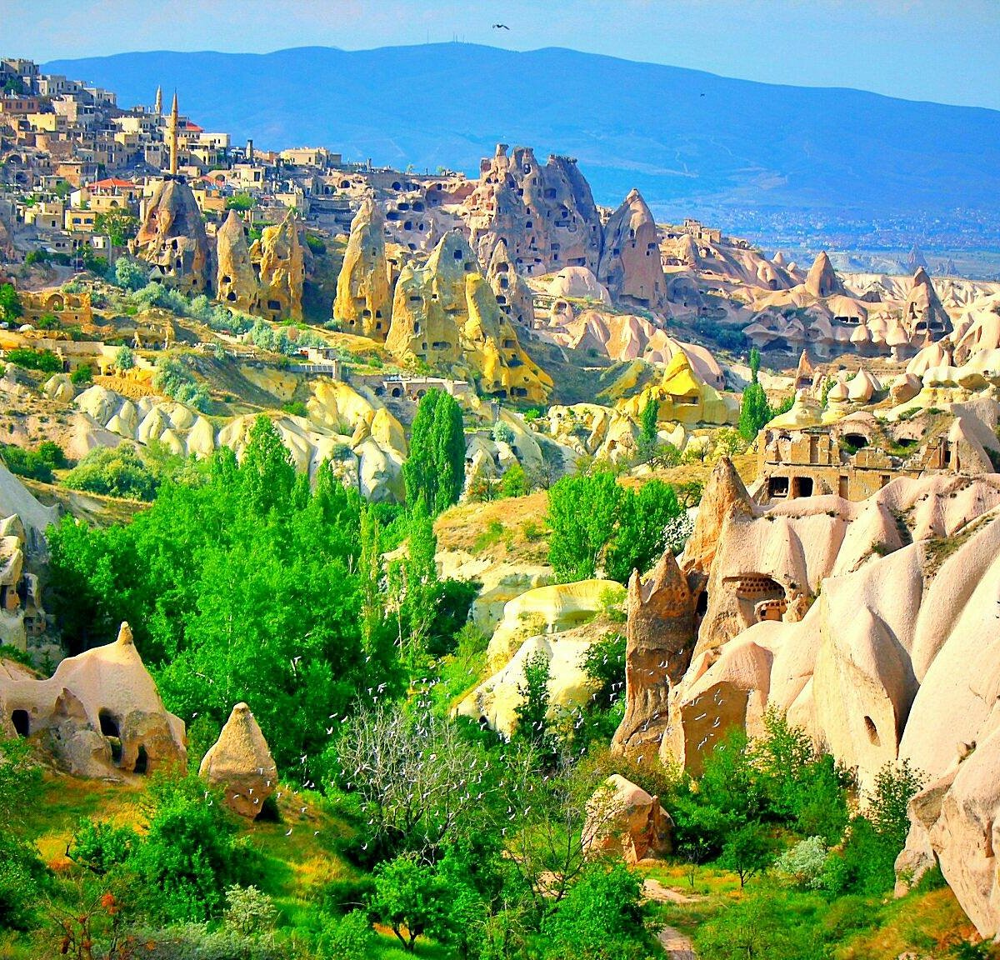

Kapadokya; Nevşehir, Ürgüp ve Göreme arasında kalan, peri bacaları, yeraltı şehirleri ve vadileriyle ünlü eşsiz bir bölgedir. Milyonlarca yıl önce volkanik patlamalarla oluşan bu topraklar, rüzgar ve suyun yontmasıyla bugünkü büyüleyici görünümüne kavuşmuştur.
Göreme Milli Parkı ve Kapadokya, 1985 yılında UNESCO Dünya Mirası Listesi'ne girmiştir. Bölge, sıcak hava balonları, kaya oyma oteller, yeraltı şehirleri ve açık hava müzeleriyle yıl boyunca dünyanın her yerinden ziyaretçi ağırlamaktadır.
